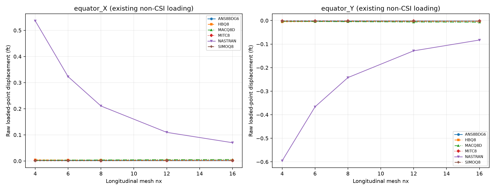

Updated 19 October 2026. Existing solver runs only; numerical results come from native OP2.
Status: existing Q8 responses measured; DAT loading does not match CSI. No independent-reference accuracy claim. T6 2-007 input/output was not found in the verified production set.
CSI uses radius 10 ft, thickness 0.04 ft, E=68,250,000 kip/ft², nu=0.3 and an 18° pole opening, with symmetry and radial alternating equatorial point loads of 1 kip on the quadrant. Its independent displacement is +0.0940 ft at (10,0,0), and −0.0940 ft at (0,10,0), in the load directions.
Reference clarified 20 October 2026 from the supplied CSI Example 2-007 pages. The reference for the 18° opening model is 0.0940 ft. The value 0.0924 ft is a theoretical lower bound for the hemisphere without the opening; it is not the comparison target for this model.
| Shell option | Physical observable | Independent (ft) | CSI SAP2000 (ft) | Absolute SAP2000/reference error (%) |
|---|---|---|---|---|
| Thin | UX at CSI joint 1, equatorial X end | +0.0940 | +0.0939 | 0.1064 |
| Thin | UY at CSI joint 9, equatorial Y end | −0.0940 | −0.0939 | 0.1064 |
| Thick | UX at CSI joint 1, equatorial X end | +0.0940 | +0.0927 | 1.3830 |
| Thick | UY at CSI joint 9, equatorial Y end | −0.0940 | −0.0927 | 1.3830 |
Errors in this table are recomputed as 100×abs(solver−reference)/abs(reference) from the printed displacements. CSI prints rounded signed differences of 0% for thin and −1% for thick. These SAP2000 values are published reference evidence, not outputs of the local Nastran/MYSTRAN runs. The smaller thick displacement is discussed by CSI as increased bending stiffness where shear deformation is small; it does not justify rescaling local solver results.
The CSI reference is now established. A matching load, symmetry frame, material/units, opening and fixed physical observation are still required before attaching reference errors to a local run. MID3 remains active for the intended thick comparison.
Existing DAT has basic FORCE CID=0, magnitude 50 at both points. At (10,0,0) its direction is (0.70710678,0.70710678,0), giving approximately (35.3553,35.3553,0) force components; at (0,10,0) it is (0,−1,0), giving (0,−50,0). Both magnitude and the first force direction differ from CSI. Scalar normalization cannot repair that physical mismatch. Additional symmetry/DOF parity must be verified before any corrected CSI run.
The observations below use exact geometry-selected equator points, CD=0, tolerance 1e-6 ft, not a maximum over arbitrary probes. Raw curves document solver response only. The old probe envelope is superseded. DAT is preserved unchanged; a corrected physical model would require a separate authorized rerun.

| nx | Solver/formulation | Physical point | GRID | UX or UY (ft) | CSI error |
|---|---|---|---|---|---|
| 4 | ANS8BDG6 | equator_X | 21 | 0.002399698 | — |
| 4 | ANS8BDG6 | equator_Y | 25 | -0.002781065 | — |
| 4 | HBQ8 | equator_X | 21 | 0.004580285 | — |
| 4 | HBQ8 | equator_Y | 25 | -0.005314924 | — |
| 4 | MACQ8D | equator_X | 21 | 0.002683991 | — |
| 4 | MACQ8D | equator_Y | 25 | -0.003127071 | — |
| 4 | MITC8 | equator_X | 21 | 0.001501415 | — |
| 4 | MITC8 | equator_Y | 25 | -0.001780118 | — |
| 4 | NASTRAN | equator_X | 21 | 0.5366054 | — |
| 4 | NASTRAN | equator_Y | 25 | -0.5955468 | — |
| 4 | SIMOQ8 | equator_X | 21 | 0.0009002474 | — |
| 4 | SIMOQ8 | equator_Y | 25 | -0.001143409 | — |
| 6 | ANS8BDG6 | equator_X | 43 | 0.00198326 | — |
| 6 | ANS8BDG6 | equator_Y | 49 | -0.002414595 | — |
| 6 | HBQ8 | equator_X | 43 | 0.003762207 | — |
| 6 | HBQ8 | equator_Y | 49 | -0.004482049 | — |
| 6 | MACQ8D | equator_X | 43 | 0.003443895 | — |
| 6 | MACQ8D | equator_Y | 49 | -0.004116552 | — |
| 6 | MITC8 | equator_X | 43 | 0.001294117 | — |
| 6 | MITC8 | equator_Y | 49 | -0.001638978 | — |
| 6 | NASTRAN | equator_X | 43 | 0.3228598 | — |
| 6 | NASTRAN | equator_Y | 49 | -0.3663245 | — |
| 6 | SIMOQ8 | equator_X | 43 | 0.001022905 | — |
| 6 | SIMOQ8 | equator_Y | 49 | -0.001359812 | — |
| 8 | ANS8BDG6 | equator_X | 73 | 0.001811155 | — |
| 8 | ANS8BDG6 | equator_Y | 81 | -0.002291732 | — |
| 8 | HBQ8 | equator_X | 73 | 0.003369879 | — |
| 8 | HBQ8 | equator_Y | 81 | -0.004103507 | — |
| 8 | MACQ8D | equator_X | 73 | 0.004125794 | — |
| 8 | MACQ8D | equator_Y | 81 | -0.004997212 | — |
| 8 | MITC8 | equator_X | 73 | 0.001261825 | — |
| 8 | MITC8 | equator_Y | 81 | -0.0016686 | — |
| 8 | NASTRAN | equator_X | 73 | 0.2104795 | — |
| 8 | NASTRAN | equator_Y | 81 | -0.2422509 | — |
| 8 | SIMOQ8 | equator_X | 73 | 0.001150616 | — |
| 8 | SIMOQ8 | equator_Y | 81 | -0.001564547 | — |
| 12 | ANS8BDG6 | equator_X | 157 | 0.001694588 | — |
| 12 | ANS8BDG6 | equator_Y | 169 | -0.002239815 | — |
| 12 | HBQ8 | equator_X | 157 | 0.002860556 | — |
| 12 | HBQ8 | equator_Y | 169 | -0.003598422 | — |
| 12 | MACQ8D | equator_X | 157 | 0.005136814 | — |
| 12 | MACQ8D | equator_Y | 169 | -0.00628259 | — |
| 12 | MITC8 | equator_X | 157 | 0.001342161 | — |
| 12 | MITC8 | equator_Y | 169 | -0.001835994 | — |
| 12 | NASTRAN | equator_X | 157 | 0.1096389 | — |
| 12 | NASTRAN | equator_Y | 169 | -0.1285962 | — |
| 12 | SIMOQ8 | equator_X | 157 | 0.001331889 | — |
| 12 | SIMOQ8 | equator_Y | 169 | -0.001840519 | — |
| 16 | ANS8BDG6 | equator_X | 273 | 0.00168148 | — |
| 16 | ANS8BDG6 | equator_Y | 289 | -0.002263876 | — |
| 16 | HBQ8 | equator_X | 273 | 0.002541279 | — |
| 16 | HBQ8 | equator_Y | 289 | -0.003264502 | — |
| 16 | MACQ8D | equator_X | 273 | 0.005798806 | — |
| 16 | MACQ8D | equator_Y | 289 | -0.007089869 | — |
| 16 | MITC8 | equator_X | 273 | 0.001440639 | — |
| 16 | MITC8 | equator_Y | 289 | -0.001987721 | — |
| 16 | NASTRAN | equator_X | 273 | 0.07007686 | — |
| 16 | NASTRAN | equator_Y | 289 | -0.08274896 | — |
| 16 | SIMOQ8 | equator_X | 273 | 0.00142134 | — |
| 16 | SIMOQ8 | equator_Y | 289 | -0.001975368 | — |
DAT physical signatures (GRID, elements, properties, materials, loads and SPC) match across the available solvers/formulations for each individual model. Diagnostic F06 scans found no fatal or excessive-pivot message in these re-exported runs.
CSI Example 2-007. Meshes were generated independently in Python, not exported from SAP2000 S2K. Original DAT and OP2 remain local. No stiffness, loads or constraints were changed for this publication update. Missing measurements are shown as —. Solver agreement alone does not establish independent accuracy.